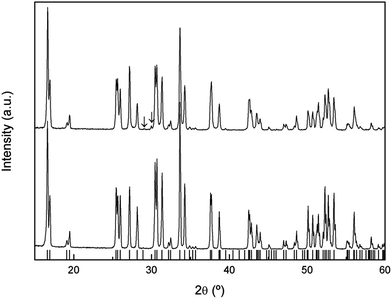
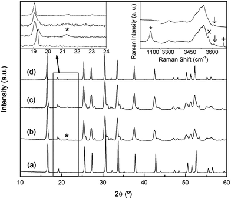
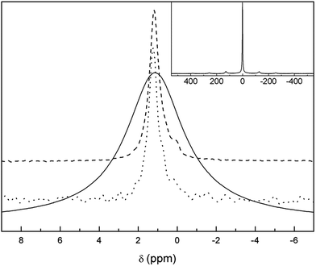
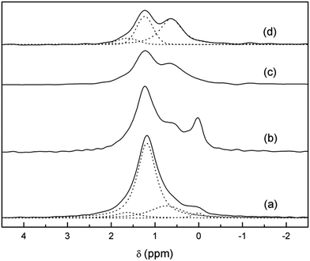
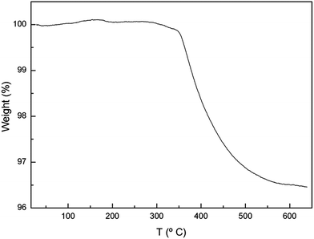
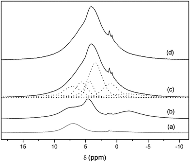
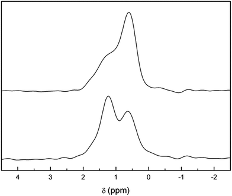
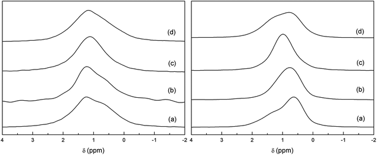

Open Access Article
This Open Access Article is licensed under a Creative Commons Attribution-Non Commercial 3.0 Unported Licence
NMR study of Li distribution in Li7−xHxLa3Zr2O12 garnets†
G.
Larraz
a,
A.
Orera
*a,
J.
Sanz
b,
I.
Sobrados
b,
V.
Diez-Gómez
b and
M. L.
Sanjuán
a
aInstituto de Ciencia de Materiales de Aragón, CSIC–Universidad de Zaragoza, E-50009 Zaragoza, Spain. E-mail: aorera@unizar.es
bInstituto de Ciencia de Materiales de Madrid, CSIC, E-28049 Madrid, Spain
First published on 26th January 2015
Despite the large number of NMR studies performed on lithium conductors with a garnet-type structure, the distribution of the lithium ions in Li7La3Zr2O12 (LLZO), and their contribution to ionic conductivity are still a matter of controversy. In this work we present a magic-angle spinning (MAS) NMR study of enriched 6Li7−xHxLa3Zr2O12 (0 ≤ x ≤ 5) garnets with the aim of identifying the bands arising from the different lithium sites occupied in the garnet lattice. Taking advantage of the known sensitivity of this material to moisture and facile proton-for-lithium exchange, we have been able to alter the relative population of tetrahedral and octahedral sites (the exchange is favoured in the latter) by submitting the samples to different post-treatments to obtain samples with varying lithium content. This has allowed the identification of three different bands that we ascribe to Li in different environments within the garnet structure. In addition, variable temperature measurements have indicated the presence of dynamic exchange processes between the octahedral and tetrahedral Li sites. Protons inserted in the garnet structure were analyzed using 1H-MAS-NMR and Raman spectroscopies. 6Li-1H-CP-MAS experiments have allowed the investigation of the relative distribution of protons and lithium ions in partially exchanged samples.
Introduction
The family of Li3+yLa3M2O12 lithium-conducting garnets (M = Nb, Ta, Sb, Zr,…) has attracted interest in the last ten years as candidates to be used as electrolytes in lithium batteries (see the review by Thangadurai et al. and references therein).1 Among the garnets, those with tetravalent M cations are particularly interesting because their stable structure is tetragonal (I41/acd space group (S.G.)), in contrast with the cubic symmetry (Iad) of garnets with pentavalent or hexavalent M cations. Despite their low conductivity (1.63 × 10−6 S cm−1 for tetragonal Li7La3Zr2O12 (t-LLZO) and ∼10−8 S cm−1 for Li7La3Sn2O12, both at 300 K),2,3 tetragonal garnets serve as model materials to understand the role of site occupancies.The low conductivity of the tetragonal garnets was soon attributed to the fully ordered distribution of lithium in three crystallographic sites of the I41/acd unit cell: the 8a site, with nearly regular tetrahedral symmetry, and two distorted octahedral sites, 16f and 32g. In the octahedral sites, lithium is either slightly displaced from the octahedron center, or clearly shifted toward an octahedron face, respectively.2,3 Thus, in the tetragonal garnets, two thirds of the tetrahedral cavities of the prototype garnet structure are empty, whereas all the octahedral sites are occupied. Similarly, the high conductivity of cubic garnets arises from the partial occupancy of both tetrahedral (24d) and octahedral (48g and 96h) cages. For the lowest lithium contents, the higher occupancy of the tetrahedral site results in the shift of all neighbouring octahedral lithium ions to the more distorted site (96h in Iad S.G.).
Regarding Zr-based garnets, since the first report by Murugan et al.4 of a highly conducting cubic form of Li7La3Zr2O12 (c-LLZO) (later explained as a result of accidental Al-doping from crucibles),5 current efforts are now devoted to optimize their conductivities by appropriately doping either at the Li or Zr sublattices6–13 or even by changing the rare earth metal.14 In parallel, intense theoretical work is being performed to model the lithium conduction paths and the role of the octahedral and tetrahedral sites in the diffusion mechanism.15–17
Altogether, it is clear that a delicate interplay exists between lithium content, site occupancy, and total conductivity, which indicate the need of a thorough characterization of the lithium distribution in tetragonal and cubic LLZO phases, as well as of its evolution with temperature.
In the context of lithium conducting oxides, solid-state NMR spectroscopy is a highly valuable technique that provides information about structure and dynamics.18,19 Structural information is mainly obtained from high resolution 6,7Li-MAS-NMR, which is able to identify bands arising from the different lithium species present in the lattice. Through appropriate modeling, a relationship between the chemical shifts and the Li environment can be proposed.20–22 Because the NMR intensity is proportional to the lithium concentration, a comparison of the integrated areas provides a hint of the lithium occupancy of each site. Information on lithium diffusion, on the other hand, is obtained either from lineshape analysis of static NMR spectra as a function of temperature, or it is obtained from relaxometry experiments.23
The situation in Li-conducting garnets is, however, complicated by several factors. First, the range of Li chemical shifts (δiso) in these materials is very narrow, which makes it difficult to perform an unambiguous assignment to specific lithium sites. This is especially critical when only 7Li spectra are recorded because dipolar broadening, even in MAS spectroscopy, obscures the eventual separation of bands with different δiso. 6Li MAS-NMR provides a considerably higher resolution, but has the disadvantage of a lower signal to noise sensitivity because this isotope is only 7% abundant in natural lithium. There is another difficulty, namely, the presence of lithium-containing impurities. This aspect is often underestimated, an omission that is particularly relevant in Li garnets due to the tendency of these compounds to form second phases, such as lithium hydroxides or lithium carbonate as a result of the facile exchange of lithium by protons from ambient air.24–26 A simple explanation for this contribution being frequently disregarded is that most of such phases are light-weight compared with the weight of garnet itself, which makes them not easily detectable by the X-ray diffraction methods routinely used to characterize the phase purity of the samples.
Concerning 6Li-MAS-NMR measurements in the LLZO-based garnets, for instance, Kuhn et al.27 found two bands at around 0 and +1.2 ppm that were initially attributed to tetrahedral and octahedral sites respectively, though in a subsequent publication they suggest that the signal at lower δiso values may arise from Li2CO3.28 In contrast, Geiger et al. found a single band around 1.2–1.3 ppm in cubic, Al-stabilized c-LLZO.5 The chemical shift values and the narrow linewidths led these authors to attribute this band to the tetrahedral sites, in which lithium atoms would spend most of their time. Regarding the 6Li-MAS spectra of related garnet compounds, van Wüllen et al. found two bands for Li5La3Nb2O12 at slightly different chemical shifts, but separated by the same interval of about +1.2 ppm. They attributed these two bands to tetrahedral and octahedral species (at lower and higher δiso values, respectively).29 Two bands were also found in Li5La3Nb2O12 and Li5La3Ta2O12 by Nyman et al., and were interpreted as arising from “non-mobile” and “mobile” lithium ions of the garnet lattice.30 A very similar result was reported by Spencer et al. for Li6BaLa2Ta2O12 and Li6BaLa2Nb2O12.31 Finally, for the other tetragonal garnet Li7La3Sn2O12, with a Li distribution similar to LLZO, Galven et al. found just one peak at +1.7 ppm in the 6Li-MAS spectrum of the stoichiometric compound, and they found two signals, at +1.7 and +1 ppm, in the proton-exchanged variety.24 Due to the higher broadening effects, as explained above, a single band has been systematically found in 7Li-MAS spectra.5,32,33,34,35 Diffusion parameters have also been determined by a number of authors, through lineshape analysis of 7Li spectra as a function of temperature, or by relaxometry.7,27,31,36,37,38
In this work we present an NMR study of LLZO garnets with the aim of identifying the bands arising from the different lithium sites occupied in the lattice. To enhance both resolution and sensitivity we present (for the first time to our knowledge) 6Li-MAS-NMR spectra recorded in samples enriched with 6Li isotope. Taking advantage of the known sensitivity of this material to moisture and facile proton-for-lithium exchange, we altered the relative population of tetrahedral and octahedral sites by submitting the samples to different post-treatments to obtain samples with varying lithium contents. The characteristics of proton bonding have also been analyzed using 1H-MAS-NMR, 6Li-1H-CP-MAS-NMR, and Raman spectroscopies. Variable temperature measurements have indicated the presence of dynamic processes.
Experimental
Sample preparation
Powdered samples of tetragonal Li7La3Zr2O12 garnets have been synthesized by a solid state reaction at temperatures between 900 °C and 980 °C using 6LiOH·H2O (95 atom% 6Li) or 7Li2CO3 (99% purity), La2O3 (99.99% purity, pre-dried at 900 °C for 12 h), and ZrO2 (99% purity) as reagents. A 15% excess of lithium was added to the stoichiometric ratio to compensate lithium loss during the synthesis.In order to vary the lithium content in the garnet, Li+/H+ exchange was performed by submitting a fresh tetragonal sample to prolonged annealing in air both at 350 °C and at RT. In addition to the garnet phase, lithium hydroxide and lithium carbonate were detected as secondary phases coming from the proton for lithium exchange process. Both phases are water soluble, thus with the aim of clarifying the NMR spectra, the aged samples were dipped in water for 2 min under stirring, and then filtered and dried. Using XRD and Raman spectroscopy we have verified that no changes take place in the garnet after the washing treatment, indicating that only the secondary phases were removed.
Sample characterization
The chemical composition of the synthesized materials was determined by ICP-OES (inductively coupled plasma optical emission spectrometry). Within the experimental error, the La and Zr content were close to the stoichiometric composition.X-ray diffraction (XRD) experiments were performed on a Rigaku D/max 2500 diffractometer equipped with Cu Kα (λ = 1.5418 Å) radiation and working at 40 kV and 80 mA. Data were collected in a step mode with Δ2θ = 0.03° and a counting time of 1 s per step. XRPD patterns were analyzed by the Rietveld method39 using FullProf software.40
Raman dispersion measurements were performed using a DILOR XY spectrometer with a CCD detector and at a spectral resolution of 1.4 cm−1. The 514.53 nm line of an Ar+ ion laser was used as the excitation source, and the power at the sample surface was ≤25 mW. The scattered light was collected through an X50 microscope objective lens. A Linkam TS1500V stage was used for in situ thermal treatments.
Thermogravimetric analysis (TGA) was carried out in a SDT2960 thermobalance, with a heating rate of 10 °C min−1 in the temperature range from 25 to 650 °C under flowing air.
Single pulse 1H, 7Li and 6Li MAS and 6Li{1H}-CP-MAS NMR experiments were conducted on a Bruker Avance-400 NMR spectrometer with a 9.4 T widebore superconducting magnet. The measurements were performed with 2.5 mm zirconia rotors with Kel-F caps and a spinning rate of 10 and 20 kHz. In high-power proton decoupling experiments 6Li nuclei were irradiated with a π/2 pulse, the relaxation delay used was 80 s, 32 scans were acquired, and a proton decoupling SPINAL64 sequence was used.
1H MAS NMR spectra were recorded at 400.13 MHz after excitation with a π/2 pulse length of 3.2 μs and a recycle delay of 90 s. The number of scans was 8. Spectra were referenced to TMS (tetramethylsilane). The single pulse 6Li MAS NMR spectra were studied at 58.86 MHz after irradiating the samples with a π/8 (1 μs) pulse, using a relaxation delay of 40 s, and running 80 scans. 7Li MAS NMR spectra were obtained at 155.51 MHz after π/2 (1.75 μs) pulse irradiation, using a relaxation delay of 10 s, and running 120 scans. Chemical shifts refer to an aqueous solution of LiCl (1 M). Some experiments have been conducted at higher relaxation delays (15000 s) to avoid saturation effects in the detection of Li signals with long relaxation delays. For comparison purposes, reference 6Li MAS NMR spectra of possible byproducts of the H+/Li+ exchange process were recorded. Signals at 0.1, 1.2 and 0.02 ppm were observed for Li2CO3, LiOH, and LiOH·H2O, respectively.
6Li-1H-CP-MAS-NMR spectra were recorded in selected samples after a contact time of 7 ms and 64 scans. The relaxation delay was 60 s without acquisition of dummy scans. Hartmann-Hahn polarization transfer from 1H to 6Li was achieved with a nutation frequency of 70 kHz. During acquisition, a proton decoupling SPINAL64 sequence was used. The nature of the cross-polarization process, in which 6Li spin gathers higher polarization from the proton-spin reservoir, restricts the detection of lithium nuclei to those located near protons, namely, only those lithium nuclei which have dipolar interactions with proton nuclei. Spin-lattice relaxation behavior was studied using the inversion-recovery pulse sequence (180°–τ–90°); the 90° pulse length was 4 μs, τ was varied from 0 to 100 s, a relaxation delay of 100 s was used, and 8 scans were acquired for each time step.
Experimental results and discussion
1. X-ray powder diffraction and chemical analysis
The XRD patterns of natural abundance and 6Li enriched freshly-synthesized Li7La3Zr2O12 garnets are shown in Fig. 1, highlighting the good crystallinity and high quality of the samples. Both diffractograms were indexed to the tetragonal I41/acd space group, with lattice constants a = 13.1118 (4) Å, c = 12.6571 (4) Å and a = 13.106 (1) Å, c = 12.661 (1) Å, respectively, in agreement with those reported in the literature.2|  | ||
| Fig. 1 XRD patterns of natural abundance (bottom) and 6Li enriched (top) freshly-synthesized tetragonal Li7La3Zr2O12 garnets. Bars denote the reflections allowed for the I41/acd space group. Peaks denoted with the symbol ↓ correspond to La2O3. | ||
{kind=link}
In a previous work26 we reported on the sensitivity of the Li7La3Zr2O12 garnet to ambient conditions, especially to exposure to moisture. Annealing the material in air at temperatures of the order of 300 °C resulted in a partial H+/Li+ exchange and the transformation of the tetragonal phase to a cubic garnet. The XRD pattern of this annealed sample (Fig. 2a) shows a single phase cubic garnet that was indexed to the Iad space group with a = 13.0034 (3) Å. The space group of this protonated material is that of the conventional cubic garnets41 and the high temperature phase of tetragonal Li7La3Zr2O12 above 650 °C.26
|  | ||
| Fig. 2 XRD patterns of Li7La3Zr2O12 sample (a) washed after aging at 350 °C, (b) aged at room temperature, (c) washed after ageing at room temperature, (d) sample in (c) after heating at 300 °C. Left inset: XRD zoom. Right inset: high frequency Raman spectra of the RT aged sample before (bottom) and after (top) washing. Symbols *, ×, +, and ↓ denote Li2CO3, LiOH·H2O, LiOH, and La(OH)3, respectively. | ||
{kind=link}
However, an analogous H+/Li+ exchange process can take place at room temperature after long storage times. As it is clear from Fig. 2b, which shows the XRD pattern of a Li7La3Zr2O12 sample 3 years after its synthesis, the material overcomes the aforementioned phase change to a cubic symmetry, although it is not completely homogeneous and remains of the tetragonal phase can be observed. A subsequent treatment with water (Fig. 2c) washes out the secondary phases that appear as result of the exchange process, identified using Raman spectroscopy as Li2CO3, LiOH, and LiOH·H2O (inset at the right of Fig. 2). As lithium has a low X-ray scattering factor, Raman spectroscopy is extremely useful to identify Li-containing secondary phases. The spectra in the 1000 cm−1 region highlight the possible presence of Li2CO3, unambiguously identified by its band at ∼1090 cm−1. Additionally, hydroxide secondary phases are easily identified by their OH− stretching vibrations, typically appearing between 3500 and 3700 cm−1. The spectra in this region show, together with the characteristic bands associated to LiOH and LiOH·H2O (3675 and 3575 cm−1, respectively), different broad bands corresponding to protons in the exchanged garnet. These Raman features will be explained in a later section.
When this washed sample is briefly heated to 300 °C its homogeneity increases, and a single phase cubic garnet is obtained (Fig. 2d), although some weak reflections cannot be explained with the Iad space group. While higher resolution diffraction techniques would be required to study the structure of this exchanged compound, a first approximation could be proposed following Galven et al.'s work on the related Li6−xHxCaLa2Nb2O12 garnet,42 which is indexed to the non-centrosymmetric space group I3d taking into account second harmonic generation, transmission electron microscopy, and powder neutron diffraction data. In our study, changing from Iad to I3d would index the low intensity peaks observed at 21.5°, 40.3° and 53.4°.
The stoichiometry of the exchanged materials was determined by ICP analysis of the washed samples (without second phases) and supported by the results obtained from TGA experiments, leading to a composition of Li4.8H2.2La3Zr2O12 for the sample annealed at 350 °C and Li3.8H3.2La3Zr2O12 for the sample aged at room temperature (H+ content calculated for electrical neutrality). The lower symmetry of the compound aged at RT, compared to that exchanged at 350 °C, is then tentatively ascribed to its higher proton content as well as to the difference in the temperature at which exchange is performed.
It is worth noting that similar or even higher exchange states can be reached by treatment in water reflux for several days. In this study, the absence of CO2 in the exchange media hinders the carbonation of LiOH exchange product to Li2CO3. A detailed comparative study of the different exchange states will be published elsewhere.
2. Li-MAS-NMR of Li7La3Zr2O12 and Li7−xHxLa3Zr2O12
Both the 7Li-MAS-NMR and 6Li-MAS-NMR spectra recorded for the sample synthesized using natural abundance Li2CO3 are compiled in Fig. 3. The former spectrum exhibits one central broad band at approximately +1.2 ppm and up to three rotational sidebands. The large width of the 7Li-NMR signal confirms the need of 6Li-NMR measurements in order to distinguish Li atoms in different crystalline sites of the garnet structure, as suggested by other authors.29 In fact, 6Li-MAS-NMR spectra of the same sample shows additional bands in addition to the main signal centred at +1.2 ppm.|  | ||
| Fig. 3 Zoom of the central band of 7Li (solid) and 6Li-MAS-NMR (dotted) spectra of t-LLZO synthesized with natural abundance Li2CO3 compared to 6Li-MAS-NMR (dashed) spectrum recorded in 6Li7La3Zr2O12. Inset: full 7Li-MAS-NMR spectrum of as-synthesized t-LLZO. | ||
{kind=link}
To our knowledge, for the first time, the 6Li-MAS-NMR spectrum has been recorded in the enriched 6Li7La3Zr2O12 sample (Fig. 3) in order to obtain better signal-to-noise ratios. At least two NMR bands can be clearly distinguished in this spectrum: the main +1.2 ppm band and a less intense one at ∼+0.1 ppm. Kuhn et al. already reported two signals centred at identical chemical shifts, and tentatively attributed the low chemical shift band to Li2CO3.28 Our NMR experiments on tetragonal Li7La3Zr2O12 samples with different ageing and annealing conditions confirm this attribution because the intensity of the signal close to +0.1 ppm varies significantly and proportionally to the amount of Li2CO3 observed in the Raman spectra. It is interesting to note that long relaxation delays were required to avoid saturation of the +0.1 ppm signal, as proposed by Kuhn in his work. The assignment of the low δiso band to a secondary phase instead of the tetrahedral Li sites has some important implications concerning the diffusion model, as it will be shown later.29,36,37
Because the total amount of lithium decreases due to the H+/Li+ exchange, as reported in the previous section, we have made use of the protonated samples in order to clarify the real nature of the main band at +1.2 ppm and its possible asymmetry.
Fig. 4 shows the 6Li-MAS NMR spectra of 6Li7La3Zr2O12 as prepared and after ageing at room temperature. As it has been mentioned, the intensity of the +0.1 ppm band clearly increases after ageing, which is in accordance with the higher amount of lithium carbonate formed in the sample from the proton exchange. In fact, when the sample is washed until no impurities are observed in the Raman spectrum (inset of Fig. 2), this NMR band disappears. This washing step also reduces the intensity of the band at ∼+1.2 ppm, due to the removal of the lithium hydroxide produced from the proton exchange process. Therefore, from the combination of XRD and Raman data we can conclude that all of the 6Li signals detected in the washed aged sample (Li3.8H3.2La3Zr2O12) are characteristic of the garnet and correspond to different Li environments in the cubic structure.
|  | ||
| Fig. 4 6Li-MAS-NMR spectrum of 6Li7La3Zr2O12 as prepared (a) and aged at room temperature, 6Li3.8H3.2La3Zr2O12, before (b) and after the washing step without (c) and with (d) 1H decoupling. The four spectra are normalized to the total Li content, as determined by ICP. Dotted lines show the components result in the fitting. | ||
{kind=link}
The 1H-decoupled spectrum of Li3.8H3.2La3Zr2O12 has been decomposed as a sum of bands with a pseudo-Voigt profile. This yields three components: two clearly distinguishable bands at +0.6 and +1.2 ppm and a third one at approximately +1.6 ppm only seen as a shoulder of the main band (Fig. 4). A determination of the relative intensities of these three bands is difficult because of the considerable overlap between them. The relative areas of these lines depend also on the Gaussian or Lorentzian character of each component, which can be largely varied without appreciable loss of fit quality. The results of representative fitting approaches are included in Table 1.
| Sample | δ 6Li (ppm) | % | Li per garnet mol |
|---|---|---|---|
| Li3.8H3.2La3Zr2O12 | 1.6 | 10 | 0.37 ± 0.15 |
| 1.2 | 35 | 1.33 ± 0.15 | |
| 0.6 | 55 | 2.1 ± 0.1 | |
| Li7La3Zr2O12 | 1.6 | 7 | 0.50 ± 0.20 |
| 1.2 | 70 | 4.8 ± 0.8 | |
| 0.7 | 20 | 1.5 ± 0.5 | |
| 0.1 | 3 | 0.2 ± 0.05 |
Considering that the available sites for lithium in the crystals are basically the same in both compounds, an extrapolation of the bands resolved in Li3.8H3.2La3Zr2O12 can be made to the Li7La3Zr2O12 spectrum. From the fit shown in Fig. 4 it is clear that the asymmetric central band of the Li7La3Zr2O12 spectrum can be fitted with the three components at +0.6, +1.2 and +1.6 ppm. The difficulty in calculating the proportion of each lithium site, together with the lack of a reliable model for the relationship between the chemical shift and the chemical coordination of the atom, makes the assignment of the three bands to different crystal sites complicated. However, comparing both spectra and having in mind the process that has occurred between both states of the garnet, we can propose an attribution of these bands.
First, based on the high intensity of the +1.2 ppm band in the as-grown (AG) sample, and taking into account the site occupancy in t-LLZO,41 we assign that band to the more distorted octahedral Li ions (oct2). This is supported by physical arguments related to the exchange process: because model calculations predict a lower activation for this site,16 it is reasonable to assume that these Li ions are more easily exchanged than are the tetrahedral ones. Then, the significant decrease in the +1.2 ppm band in the protonated garnet, compared to the AG one, can be straightforwardly attributed to the easier exchange of Li ions from the more distorted octahedral site at RT (see Fig. SP1 in the ESI† file for a variation of the intensity of this band as a function of the degree of H+/Li+ exchange).
The attribution of the two other lateral bands is not as straightforward. If we compare the spectra of the as-prepared and exchanged samples, the band centred at +0.6 ppm slightly increases after ageing. The tetrahedral sites in the tetragonal parent compound are just partially occupied2 and provide potential hopping sites in the conduction process,41 such that they could increase their occupancy during the exchange process.16 As a consequence, the H+/Li+ exchange would not only affect one specific Li environment, but also favour certain lithium redistributions and an increase in tetrahedral site occupancy. Thus, the band at +0.6 ppm is attributed to tetrahedral lithium ions.43 The origin of the third band at +1.6 ppm is not clear but could be related to the less distorted octahedral lithium sites (oct1).
With this preliminary assignment, an analysis of the tetragonal parent compound can be made. As explained previously, the signal centred at +0.1 ppm can be directly assigned to the presence of lithium carbonate, probably due to both a low lithium excess from the synthesis and a slight H+/Li+ exchange, and it accounts for approximately 3% of the total lithium content. Lithium ions in t-LLZO have been described by several authors to consist of 1 lithium ion in tetrahedral site (8a) and 6 lithium ions in octahedral sites: 2 weakly distorted (16f) and 4 highly distorted (32g).2,11,41 In our study, the relative intensities of the three components of the spectrum (Table 1) would correspond to 1.5 lithium ions in the tetrahedral site, 0.5 in the less distorted octahedral site, and 4.8 in the highly distorted octahedral site (assuming a total content of 7 lithium ions per formula). This disagreement with the reported theoretical values could increase from the enormous avidity for water of these garnets and the fact that the as-prepared tetragonal sample is slightly exchanged, as will be shown in the following section. This exchange is even more favoured by the powdered state of the sample, which highly increases the surface area exposed to moisture.
Measurements of the spin-lattice relaxation times as a function of temperature support the hypothesis of lower activation energies for octahedral sites because the T1 values of oct1 and oct2 sites are shorter than those of tetrahedral sites (see ESI†). This result also agrees with the finding of dynamic properties reported in Section 4.
3. Raman, 1H-MAS-NMR and 6Li-1H-CP-MAS-NMR of Li7−xHxLa3Zr2O12
Proton incorporation in the garnet structure after ageing at RT in air has been confirmed by Raman spectroscopy measurements in the OH-region (inset of Fig. 2) and TGA (Fig. 5). Regarding the former, ageing at RT leads to the appearance of several bands in the 3200–3700 cm−1 region, which is characteristic of the stretching vibrations of hydroxyl entities. In addition to the narrow bands at 3575, 3610 and 3675 cm−1, arising from LiOH·H2O, La(OH)3 and LiOH, respectively, an intense band is found extending from 3450 to 3600 cm−1, together with another broad feature around 3300 cm−1. The main band, in turn, can be decomposed in four components with maxima at 3490, 3521, 3545 and 3570 cm−1 (see Fig. SP2 in ESI†).|  | ||
| Fig. 5 TGA curve of the 6Li3.8H3.2La3Zr2O12 garnet obtained after ageing in air at RT. | ||
{kind=link}
The appearance of several components in the high frequency band can be related to the presence of non-equivalent oxygen sites in the lattice or to different configurations of proton bonding. These frequencies are somewhat lower than those of covalently bonded hydroxyl anions, which are typically above 3600 cm−1,44 suggesting that some degree of hydrogen bonding is present between the hydroxyl proton and another oxygen atom (as in an O–H…O configuration). As the oxygen–oxygen distance (dO–O) shortens, the hydrogen bond becomes stronger, resulting in a reduction of the stretching frequency νO–H. In fact, a close correlation is empirically found between νO–H and dO–O. Using the expression νO–H = 3592 − 304 × 109exp(−dO–O/0.1321) given by Libowitzky et al.45,46 oxygen–oxygen distances between 2.88 and 3.12 Å are obtained for the bands appearing between 3490 and 3570 cm−1. These distances are just in the range of O–O distances found by neutron powder diffraction (NPD) for tetragonal2 or cubic5 LLZO garnets. On the other hand, the band at 3300 cm−1 yields dO–O = 2.74, which is shorter than the O–O bond distances reported for these garnets. We tentatively propose that the short distances arise from structural rearrangement due to proton insertion into the lattice, although it will be confirmed in a future work from neutron diffraction experiments.
The bands attributed to LiOH and LiOH·H2O disappear upon washing, as expected (inset Fig. 2).
In order to gain information about the nature of these protons, 1H-MAS NMR and CP-MAS measurements were carried out in the Li7−xHxLa3Zr2O12 system. The 1H-MAS NMR spectra of t-LLZO and Li3.8H3.2La3Zr2O12 are compared in Fig. 6. From the spectrum of t-LLZO it is clear that even the as-prepared tetragonal garnet presents a low proton content, responsible for the weak signal at +4.4 ppm. The band at ∼−2 ppm is attributed to LiOH formed by proton exchange. After a long exposure time to air and washing, the spectrum of Li3.8H3.2La3Zr2O12 shows a much higher proton content and highlights the presence of at least six bands (apart from those coming from the rotor) at +10.0, +5.7, +4.4, +3.4, +1.0 and −1.6 ppm, possibly overlapped with other signals of lower intensities. The weak band at a negative chemical shift is attributed to some LiOH formed during sample manipulation,47 whereas the main bands at +5.7, +4.4, +3.4 and +1.0 ppm are ascribed to protons inside the garnet. These chemical shifts are characteristic of protons involved in weak hydrogen-bonds, and are in agreement with those reported by other authors in analogous cubic compounds exposed to air.48
|  | ||
| Fig. 6 1H-MAS NMR spectra of Li7La3Zr2O12 (b) and Li3.8H3.2La3Zr2O12 at RT (c) and at 70 °C (d). Dotted lines show the components result of the fitting. The rotor contribution is depicted in (a). | ||
{kind=link}
In analogy with the OH− stretching frequency, different expressions have been proposed to account for the relationship between the proton chemical shift and the O–O distance between oxygen atoms involved in the hydrogen-bond. Using for instance the relation given by Eckert et al.,49
| δ [ppm] = 79.05 − 0.255dO–O [pm], |
In addition, the presence of a considerable number of protons in the lattice allows for strong cross-polarization effects between protons and lithium ions. Fig. 7 (top) shows the 6Li-1H-CP-MAS NMR spectrum of the aged and washed sample. The three bands at +1.6, +1.2 and +0.6 ppm found in single pulse 6Li experiments are still evident, but their relative intensities are very different. A remarkable enhancement in the +0.6 ppm band is observed, which suggests a closer proximity of protons with tetrahedrally coordinated lithium ions. We propose that this behavior may be a consequence of the selective occupancy by protons of the octahedral cavities left vacant by lithium ions upon exchange, in which case the tetrahedral Li sites would be first neighbors for these protons.
|  | ||
| Fig. 7 Comparison of 6Li-1H-CP-MAS NMR (top) and 6Li-MAS NMR (with 1H decoupling) (bottom) spectra of Li3.8H3.2La3Zr2O12. | ||
{kind=link}
It is interesting to note that preferential occupancy of distorted octahedral cages by protons has been found for proton-exchanged Li7Nd3Zr2O12 by modelling techniques.14 A similar result is found by neutron diffraction for approximately 49% proton-exchanged Li5La3Nb2O12.50 During the revision of this manuscript, a Li+/H+ exchange of c-LLZO in aqueous solution has been reported.51 Preferential exchange of the octahedral 96h site is derived from electron energy loss spectroscopy (EELS) experiments in that work.
4. Dynamic effects
Fig. 8 shows the temperature evolution of 6Li-MAS and 6Li-1H-CP-MAS NMR spectra of Li3.8H3.2La3Zr2O12 recorded at RT, 60 °C and 70 °C. The TGA experiment (Fig. 5) shows that there are no significant weight losses at temperatures below 350 °C, which indicates that all protons remain in the garnet structure until these temperatures. The XRD, Raman and 1H-MAS NMR spectra show no changes between RT and 70 °C (see Fig. 6 and SP2†), thus 6Li-MAS NMR changes produced at 60 and 70 °C are attributed to a thermally activated motional averaging process in which octahedral and tetrahedral lithium exchange sites. At 70 °C the two components converge to a single symmetric band whose position, +1.1 ppm, agrees within error with the weighted average of the chemical shifts at RT (+1.0 ppm). The fact that the position of the motional-averaged band coincides with the weighted averaged δiso values indicates not only that both octahedral and tetrahedral lithium ions are mobile but that they exchange positions (i.e. motion is not restricted to each sublattice separately).|  | ||
| Fig. 8 Comparison of 6Li-MAS NMR (left) and 6Li-1H-CP-MAS NMR (right) spectra of Li3.8H3.2La3Zr2O12 at RT (a), 60 °C (b), 70 °C (c) and at RT after cooling from 70 °C (d). | ||
{kind=link}
The remarkable difference between the single pulse MAS and CP MAS-NMR spectra observed at RT is not found at 70 °C, indicating that the preferential transfer of polarization from protons to tetrahedral lithium is affected by the Li dynamic processes. The small discrepancy between the spectra of the sample cooled from 70 °C and the pristine sample suggests a slight redistribution of the Li ions in the garnet network.
The occurrence of lithium exchange between tetrahedral and octahedral sites in proton-exchanged LLZO is an interesting phenomenon that deserves further studies. A more detailed variable temperature 6Li-MAS NMR study up to 120 °C of an equivalent sample is compiled in the ESI† file. As mentioned in Section 2, lower T1 values are observed for the two high ppm components corresponding to both octahedral Li sites according to our model. These lower T1 values imply higher mobility, which supports their easier H+/Li+ exchange compared to that of the less mobile tetrahedral Li atoms. It is at higher temperatures (between 60 and 90 °C in the present experiments) when these tetrahedral Li atoms attain enough mobility (observable by the decrease in their T1 values) to allow the exchange between sites, yielding an averaging of the position of the NMR bands.
Conclusions
The lithium distribution of 6Li-enriched Li7La3Zr2O12 has been studied by NMR spectroscopy with XRD and Raman as complementary spectroscopic techniques. The 6Li-MAS-NMR spectrum of as-grown 6Li7La3Zr2O12 shows a main band at +1.2 ppm and a weak band at ∼+0.1 ppm, in agreement with reports of other authors. By combining NMR and Raman spectroscopy, the low ppm signal has been definitively identified as coming from Li2CO3 and/or LiOH·H2O resulting from the extreme ability of t-LLZO to undergo Li+/H+ exchange when it is exposed to moisture or air, even at RT. When the exchange extent is sufficient and homogeneous, it yields a change in the crystal symmetry from tetragonal to cubic.The facile Li+/H+ exchange has proved to be very useful in the detection and identification of different components beneath the main band at +1.2 ppm, which appear too overlapped to be unambiguously distinguished at first sight. Apart from varying the total lithium content, because of the different stabilities of the tetrahedral and octahedral Li sites, the exchange process also modifies their relative occupation. In the case of the exchanged compound Li3.8H3.2La3Zr2O12, this change in populations enables the identification of three signals in the 6Li-MAS-NMR spectra, which can be extrapolated to the parent tetragonal compound, Li7La3Zr2O12. These three signals have been assigned to the three Li environments reported in the literature (from high to low chemical shift: less distorted octahedral, distorted octahedral, and tetrahedral). T1 values obtained from an inversion recovery experiment agree with the different mobilities expected for the different Li sites, with the octahedral Li ions being more mobile than the tetrahedral ones. Moreover, measurements at different temperatures have indicated the presence of a dynamic process in which octahedral and tetrahedral Li ions exchange sites.
Proton incorporation has been studied by Raman and 1H-MAS-NMR. Both techniques show different signals that can be associated to the presence of non-equivalent oxygen sites in the lattice or to different configurations of proton bonding. The position of these signals in the spectrum suggests the presence of some degree of hydrogen bonding.
Acknowledgements
This work has been supported by the Spanish Ministerio de Economía and Feder funds through grant MAT2010-19837-C06-06 and MAT2010-19837-C06-03. A. Orera and G. Larraz acknowledge the financial support provided by the Spanish Ministerio de Ciencia e Innovación through a Juan de la Cierva contract and by Gobierno de Aragón through a PhD grant (B108/11) respectively. The authors wish to thank Servicio General de Apoyo a la Investigacion-SAI (Universidad de Zaragoza) for technical support.References
- V. Thangadurai, S. Narayanan and D. Pinzaru, Chem. Soc. Rev., 2014, 43, 4714–4727 RSC .
- J. Awaka, N. Kijima, H. Hayakawa and J. Akimoto, J. Solid State Chem., 2009, 182, 2046–2052 CrossRef CAS .
- J. Percival, E. Kendrick, R. I. Smith and P. R. Slater, Dalton Trans., 2009, 5177–5181 RSC .
- R. Murugan, V. Thangadurai and W. Weppner, Angew. Chem., Int. Ed., 2007, 46, 7778–7781 CrossRef CAS PubMed .
- C. A. Geiger, E. Alekseev, B. Lazic, M. Fisch, T. Armbruster, R. Langner, M. Fechtelkord, N. Kim, T. Pettke and W. Weppner, Inorg. Chem., 2011, 50, 1089–1097 CrossRef CAS PubMed .
- M. Kotobuki, K. Kanamura, Y. Sato and T. Yoshida, J. Power Sources, 2011, 196, 7750–7754 CrossRef CAS .
- H. Buschmann, J. Doelle, S. Berendts, A. Kuhn, P. Bottke, M. Wilkening, P. Heitjans, A. Senyshyn, H. Ehrenberg, A. Lotnyk, V. Duppel, L. Kienle and J. Janek, Phys. Chem. Chem. Phys., 2011, 13, 19378–19392 RSC .
- E. Rangasamy, J. Wolfenstine and J. Sakamoto, Solid State Ionics, 2012, 206, 28–32 CrossRef CAS .
- M. A. Howard, O. Clemens, E. Kendrick, K. S. Knight, D. C. Apperley, P. A. Anderson and P. R. Slater, Dalton Trans., 2012, 41, 12048–12053 RSC .
- S. Ohta, T. Kobayashi and T. Asaoka, J. Power Sources, 2011, 196, 3342–3345 CrossRef CAS .
- A. Logeat, T. Koehler, U. Eisele, B. Stiaszny, A. Harzer, M. Tovar, A. Senyshyn, H. Ehrenberg and B. Kozinsky, Solid State Ionics, 2012, 206, 33–38 CrossRef CAS .
- R. Murugan, S. Ramakumar and N. Janani, Electrochem. Commun., 2011, 13, 1373–1375 CrossRef CAS .
- R. Takano, K. Tadanaga, A. Hayashi and M. Tatsumisago, Solid State Ionics, 2014, 255, 104–107 CrossRef CAS .
- M. A. Howard, O. Clemens, K. S. Knight, P. A. Anderson, S. Hafiz, P. M. Panchmatia and P. R. Slater, J. Mater. Chem. A, 2013, 1, 14013–14022 CAS .
- K. Meier, T. Laino and A. Curioni, J. Phys. Chem. C, 2014, 118, 6668–6679 CAS .
- M. Xu, M. S. Park, J. M. Lee, T. Y. Kim, Y. S. Park and E. Ma, Phys. Rev. B: Condens. Matter Mater. Phys., 2012, 85, 052301 CrossRef .
- R. Jalem, Y. Yamamoto, H. Shiiba, M. Nakayama, H. Munakata, T. Kasuga and K. Kanamura, Chem. Mater., 2013, 25, 425–430 CrossRef CAS .
- R. Bohmer, K. R. Jeffrey and M. Vogel, Prog. Nucl. Magn. Reson. Spectrosc., 2007, 50, 87–174 CrossRef .
- C. P. Grey and N. Dupre, Chem. Rev., 2004, 104, 4493–4512 CrossRef CAS PubMed .
- J. F. Stebbins, Solid State Ionics, 1998, 112, 137–141 CrossRef CAS .
- Z. Xu and J. F. Stebbins, Solid State Nucl. Magn. Reson., 1995, 5, 103–112 CrossRef CAS PubMed .
- T. M. Alam, S. Conzone, R. K. Brow and T. J. Boyle, J. Non-Cryst. Solids, 1999, 258, 140–154 CrossRef CAS .
- A. Kuhn, M. Kunze, P. Sreeraj, H. D. Wiemhofer, V. Thangadurai, M. Wilkening and P. Heitjans, Solid State Nucl. Magn. Reson., 2012, 42, 2–8 CrossRef CAS PubMed .
- C. Galven, J. Dittmer, E. Suard, F. Le Berre and M.-P. Crosnier-Lopez, Chem. Mater., 2012, 24, 3335–3345 CrossRef CAS .
- L. Truong and V. Thangadurai, Chem. Mater., 2011, 23, 3970–3977 CrossRef CAS .
- G. Larraz, A. Orera and M. Sanjuan, J. Mater. Chem. A, 2013, 1, 11419–11428 CAS .
- A. Kuhn, S. Narayanan, L. Spencer, G. Goward, V. Thangadurai and M. Wilkening, Phys. Rev. B: Condens. Matter Mater. Phys., 2011, 83, 094302 CrossRef .
- A. Kuhn, J.-Y. Choi, L. Robben, F. Tietz, M. Wilkening and P. Heitjans, Z. Phys. Chem., 2012, 226, 525–537 CrossRef CAS .
- L. van Wullen, T. Echelmeyer, H. W. Meyer and D. Wilmer, Phys. Chem. Chem. Phys., 2007, 9, 3298–3303 RSC .
- M. Nyman, T. M. Alam, S. K. McIntyre, G. C. Bleier and D. Ingersoll, Chem. Mater., 2010, 22, 5401–5410 CrossRef CAS .
- T. L. Spencer, N. W. Plagos, D. H. Brouwer and G. R. Goward, Phys. Chem. Chem. Phys., 2014, 16, 2515–2526 RSC .
- S. Ramakumar, L. Satyanarayana, S. V. Manorama and R. Murugan, Phys. Chem. Chem. Phys., 2013, 15, 11327–11338 RSC .
- S. Narayanan, F. Ramezanipour and V. Thangadurai, J. Phys. Chem. C, 2012, 116, 20154–20162 CAS .
- A. Gupta, R. Murugan, M. P. Paranthaman, Z. Bi, C. A. Bridges, M. Nakanishi, A. P. Sokolov, K. S. Han, E. W. Hagaman, H. Xie, C. B. Mullins and J. B. Goodenough, J. Power Sources, 2012, 209, 184–188 CrossRef CAS .
- M. P. O'Callaghan, A. S. Powell, J. J. Titman, G. Z. Chen and E. J. Cussen, Chem. Mater., 2008, 20, 2360–2369 CrossRef .
- B. Koch and M. Vogel, Solid State Nucl. Magn. Reson., 2008, 34, 37–43 CrossRef CAS PubMed .
- A. Kuhn, V. Epp, G. Schmidt, S. Narayanan, V. Thangadurai and M. Wilkening, J. Phys.: Condens. Matter, 2012, 24, 035901 CrossRef CAS PubMed .
- S. Narayanan, V. Epp, M. Wilkening and V. Thangadurai, RSC Adv., 2012, 2, 2553–2561 RSC .
- H. M. Rietveld, J. Appl. Crystallogr., 1969, 2, 65–71 CrossRef CAS .
- J. Rodriguezcarvajal, Phys. B, 1993, 192, 55–69 CrossRef CAS .
- E. J. Cussen, J. Mater. Chem., 2010, 20, 5167–5173 RSC .
- C. Galven, E. Suard, D. Mounier, M.-P. Crosnier-Lopez and F. Le Berre, J. Mater. Res., 2013, 28, 2147–2153 CrossRef CAS .
- D. Wang, G. Zhong, O. Dolotko, Y. Li, M. J. McDonald, J. Mi, R. Fu and Y. Yang, J. Mater. Chem. A, 2014, 20271–20279 CAS .
- K. Beckenkamp and H. D. Lutz, J. Mol. Struct., 1992, 270, 393–405 CrossRef CAS .
- E. Libowitzky, Monatsh. Chem., 1999, 130, 1047–1059 CAS .
- T. Steiner, Angew. Chem., Int. Ed., 2002, 41, 49–76 Search PubMed .
- Y. Y. Hu, Z. G. Liu, K. W. Nam, O. J. Borkiewicz, J. Cheng, X. Hua, M. T. Dunstan, X. Q. Yu, K. M. Wiaderek, L. S. Du, K. W. Chapman, P. J. Chupas, X. Q. Yang and C. P. Grey, Nat. Mater., 2013, 12, 1130–1136 CrossRef CAS PubMed .
- C. Bernuy-Lopez, W. Manalastas, J. M. Lopez del Amo, A. Aguadero and J. A. Kilner, Chem. Mater., 2014, 3610–3617 CrossRef CAS .
- H. Eckert, J. P. Yesinowski, L. A. Silver and E. M. Stolper, J. Phys. Chem., 1988, 92, 2055–2064 CrossRef CAS .
- L. Truong, M. Howard, O. Clemens, K. S. Knight, P. R. Slater and V. Thangadurai, J. Mater. Chem. A, 2013, 1, 13469–13475 CAS .
- C. Ma, E. Rangasamy, C. Liang, J. Sakamoto, K. L. More and M. Chi, Angew. Chem., Int. Ed., 2015, 54, 129–133 CrossRef CAS PubMed .
Footnote |
| † Electronic supplementary information (ESI) available. See DOI: 10.1039/c4ta04570j |
| This journal is © The Royal Society of Chemistry 2015 |